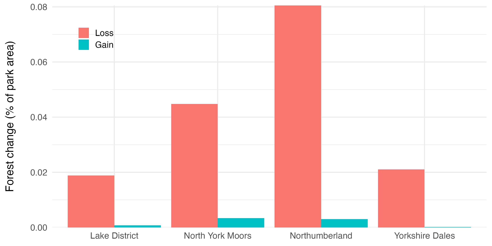

Quantifying 24 years of forest loss and gain across four northern English national parks using Google Earth Engine and R
UK national parks are often assumed to be stable, well-protected ecosystems. But forest cover within protected areas is subject to ongoing pressures — commercial forestry operations, storm damage, land use change, and the slow effects of climate stress on tree health. Understanding the actual trajectory of forest change requires moving beyond assumption and into the data.
This project used Google Earth Engine to process the Hansen Global Forest Change dataset across four northern English national parks, quantifying forest loss and gain from 2000 to 2024 and visualising the results in R. The goal was to build a reproducible remote sensing workflow applicable to any protected area, while generating concrete findings about the state of these four landscapes.
Forest loss substantially outpaced gain across all four parks over the 24-year period. Northumberland showed the highest proportional loss (~8% of park area), followed by North York Moors (~4.5%). Forest gain was minimal across all parks — well under 0.5% in each case — suggesting that natural regeneration and replanting are not keeping pace with losses at the timescales captured by this dataset.
| National Park | Forest Loss (% of park area) | Forest Gain (% of park area) | Net Change |
|---|---|---|---|
| Northumberland | ~8.0% | ~0.3% | Net loss |
| North York Moors | ~4.5% | ~0.3% | Net loss |
| Yorkshire Dales | ~2.1% | <0.1% | Net loss |
| Lake District | ~1.9% | ~0.1% | Net loss |
The contrast between Northumberland and the other three parks is striking. Northumberland National Park contains significant Kielder Forest plantation — the largest man-made forest in England — and the high loss figures likely reflect commercial felling cycles rather than ecological degradation. This is an important distinction the data alone cannot resolve: loss in Hansen GFC records any canopy removal above a 30% threshold, regardless of whether it is planned harvesting or unplanned disturbance.

Forest loss and gain as a percentage of park area for each of the four national parks, 2000–2024
Protected area boundaries were sourced from the World Database on Protected Areas (WDPA), filtered to English national parks using DESIG_ENG = "National Park". The Hansen Global Forest Change dataset (v1.12, 2000–2024) was imported and its forest loss and gain layers extracted at 30m resolution.
Results were reduced to park polygons using zonal statistics, then exported as CSV to Google Drive — with geometry fields excluded to keep file sizes manageable. The export selected only the required columns: park name, GIS area, and aggregated pixel sums for loss and gain.
Loss and gain layers were visualised in the GEE map interface across the full England and Wales national parks extent to check spatial patterns before extracting statistics. Loss pixels were concentrated in the upland north — particularly across Northumberland and the North York Moors — with scattered smaller patches across the Lake District and Yorkshire Dales. Gain pixels were sparse throughout, with no park showing meaningful spatial clustering of new forest establishment.
The exported CSVs were loaded into R, where loss and gain tables were joined and normalised by park area to produce comparable percentage figures. Large geometry fields embedded in some CSV exports were handled prior to plotting to prevent parsing errors.
The final bar chart was produced using ggplot2, presenting loss and gain side by side for each park to make the asymmetry immediately legible.
The Hansen GFC dataset is the standard global reference for forest cover change analysis — produced by the University of Maryland and updated annually, it provides consistent 30m Landsat-derived canopy cover data from 2000 onwards. Its integration into Google Earth Engine makes large-scale zonal analysis straightforward, and its long time series (now 24 years) enables meaningful trend detection rather than snapshot comparison.
The key limitation is the 30% canopy threshold for defining "forest" — areas with sparse or low canopy cover may not be captured, and the dataset does not distinguish between tree types (plantation vs. native woodland) or the cause of loss (felling vs. storm damage vs. disease).
Processing Hansen GFC data at national park scale locally would require downloading and managing multi-gigabyte raster files. GEE performs the zonal reduction server-side, exporting only the aggregated statistics needed — making the workflow fast, reproducible, and accessible without specialist hardware.
The ~8% loss figure for Northumberland warrants careful interpretation. Kielder Forest — at 250 square miles the largest forest in England — sits within and around the national park boundary, and commercial felling of Sitka spruce plantation is routine and ongoing. Hansen GFC records this as "loss" even though replanting typically follows. A more complete analysis would cross-reference the loss pixels with Forestry England felling licence data to separate planned harvesting from unplanned disturbance.
Platforms: Google Earth Engine, R
Languages: JavaScript (GEE), R
R Packages: ggplot2, dplyr, tidyr
Data Sources: Hansen Global Forest Change v1.12 (University of Maryland), World Database on Protected Areas (WDPA)
Open to collaboration on environmental data science projects and actively seeking opportunities in geospatial analysis and ecological restoration